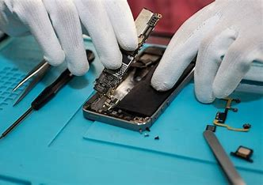

Desarrollo aplicaciones de escritorio para programar ciertas animaciones y mostrarlas en un tiras led para anuncios de negocios por medio de un controlador ESP32 desarrollando otra aplicación a parte para este. Es un trabajo que necesita compromiso y creatividad para abordar y solucionar los problemas con software.
Trabajé como técnico en reparación de celulares de diferentes marcas para una empresa.
Un trabajo común y corriente.